Internal Helpdesk
Via the TEF-Health Helpdesk users submit Support Requests and interact with Helpdesk Agents.
Helpdesk Roles and Groups
The following Helpdesk Roles exist:
- Helpdesk
- TEF Helpdesk Agent
- TEF Legal Helpdesk Team
- TEF Charité Helpdesk Team
- TEF-Helpdesk Leads
TEF Helpdesk Agents
Helpdesk Agents
- Receive notifications when they were assigned (by a TEF-Helpdesk Leads) to a ticket or when a user updates a ticket.
- Assign tickets to other team members if they cannot answer the request.
- Change ticket status based on progress.
- Reply to tickets via the chatter, triggering notifications.
- Mark tickets as Resolved when an issue is fixed.
TEF-Helpdesk Leads
TEF-Helpdesk Leads
- Receive notifications when a user creates a ticket for their Team.
- Review submitted tickets and responses.
- Assign tickets to TEF Helpdesk Agents of their Team.
- Define Support Categories and Add Groups to Categories
Helpdesk Teams
Helpdesk Agents form Helpdesk Teams that address different Categories of Support Requests and that are led by TEF-Helpdesk Leads. For example, the team TEF Legal Helpdesk Team addressing questions from Service Providers.
Accessing the Helpdesk
To submit tickets
- Browse to https://tef.charite.de/helpdesk.
- Alternatively, browse to https://tef.charite.de and click on Helpdesk.
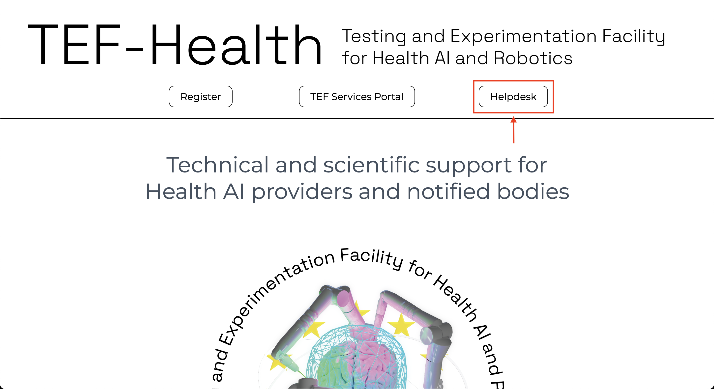
To manage and answer tickets
- Browse to https://tef.charite.de.
- Click on TEF Services Portal to enter the portal.
- Click on the button Helpdesk in the left-hand menu.
Legal Helpdesk
The Legal Helpdesk is a dedicated Helpdesk and accessed via the button Legal Helpdesk in the left-hand menu. The Legal Helpdesk can only be accessed by logged-in users with the appropriate role.
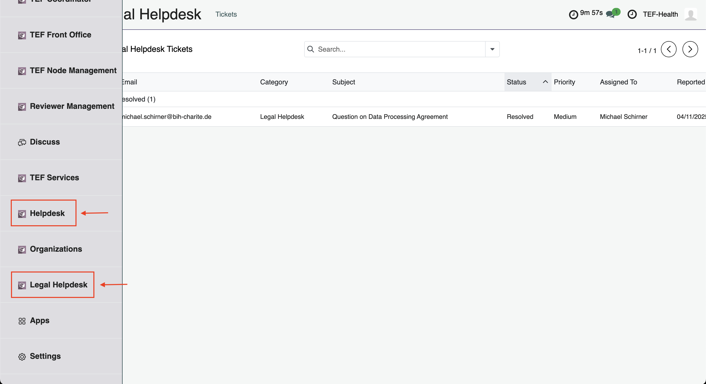
Submitting tickets
Via Public Helpdesk
Platform visitors without user account can submit support tickets without logging in.
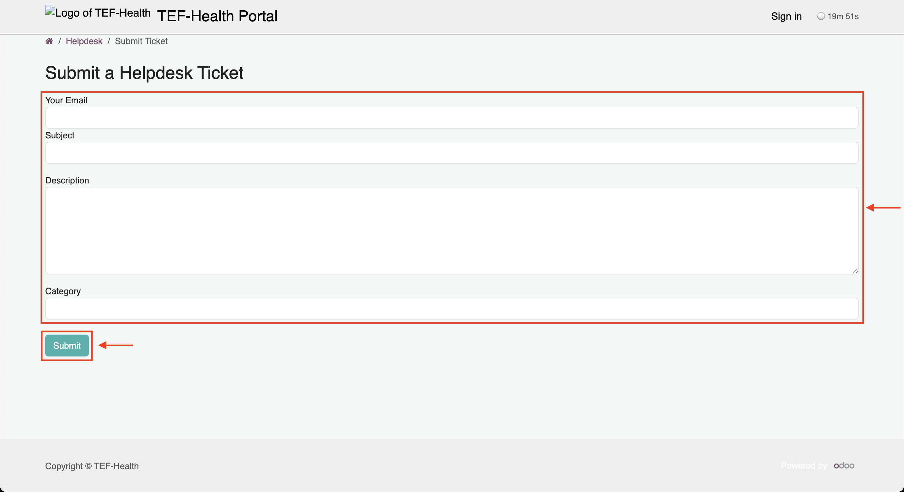
- Browse to https://tef.charite.de/helpdesk.
- Enter your
- E-mail,
- Subject of the support request,
- Description of the problem,
- Category of the request.
- Click Submit. A Helpdesk Agent will contact you via E-Mail.
- Interact with the Helpdesk Agent by responding to their E-mails.
Via Portal Helpdesk
If you are logged-in, you can access the internal portal Helpdesk https://tef.charite.de/platform/helpdesk.
- Upon logging-in, browse to https://tef.charite.de/helpdesk. You will be redirected to https://tef.charite.de/portal/helpdesk. Both URLs can be used to access the Portal Helpdesk.
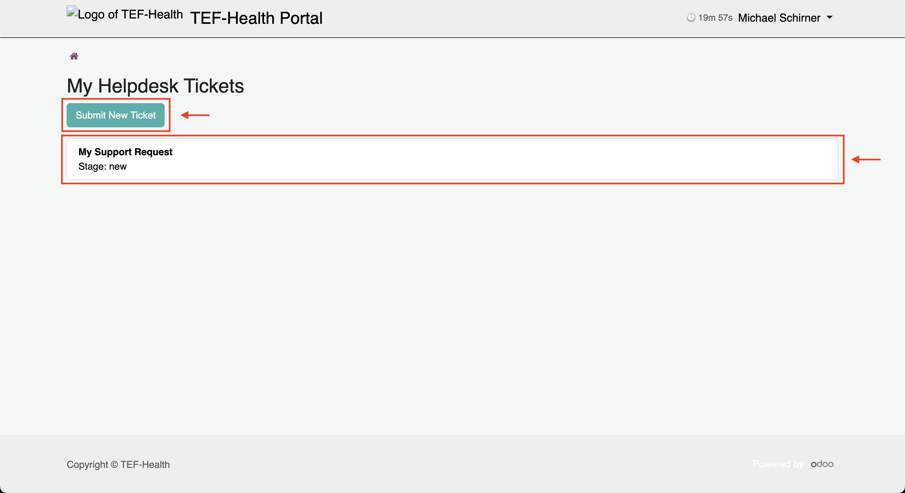
- Click on the button Submit New Ticket to create a new Support Requests. You can see your previous Support Requests underneath the button.
- Enter
- Subject of the support request,
- Description of the problem,
- Category of the request.
- Click Submit. You will receive a notification when a Helpdesk Agent responded to your request.
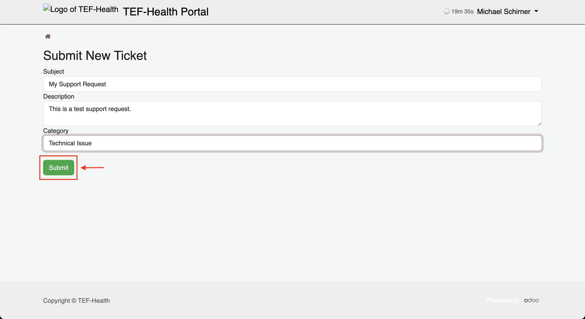
- In case of requests to the Legal Helpdesk, the Legal Categories (e.g. GDPR, AI Act, etc.) is specified to guide the request to the respective experts.
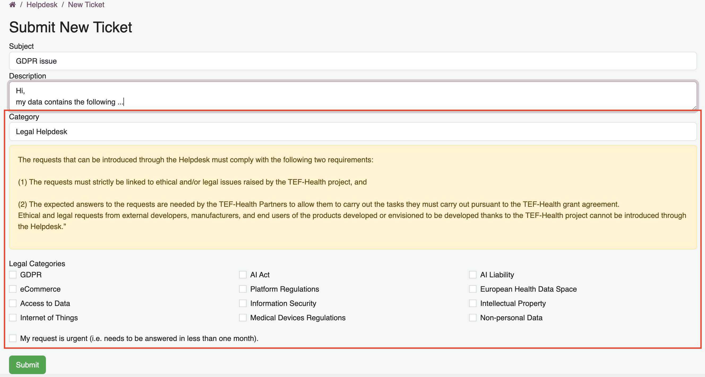
Via Email
- Write an email with your request to helpdesk@tefhealth.eu.
- You will receive an email with a link to the new ticket on the TEF-Health Platform.
- You can reply to responses either via email or via the TEF-Health Platform.
Viewing support request tickets
- Navigate to the Helpdesk by clicking on the button Helpdesk in the left-hand menu.
- Click on "Manage Tickets" in the top navigation bar to view all submitted tickets. Tickets are grouped by stage (e.g., Open, In Progress, Resolved).
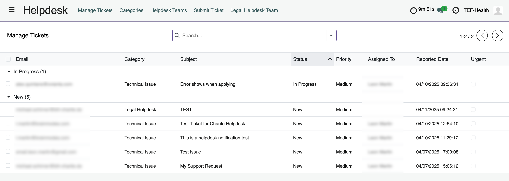
- Click on a ticket to view its details.
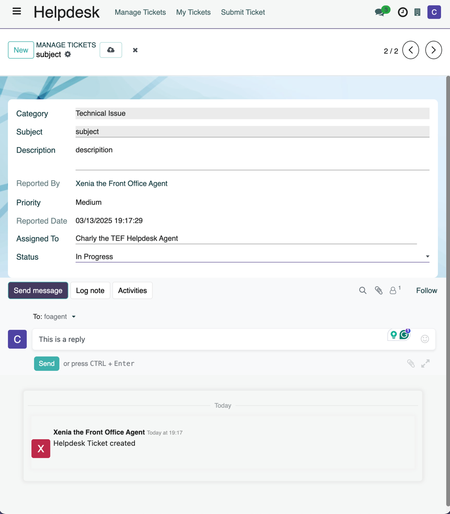
Assigning support request tickets
TEF-Helpdesk Leads are notified when a new ticket is submitted and assign tickets to the other Helpdesk roles.
- Open the ticket.
- Click on Assigned To. Select a user from the drop-down list.
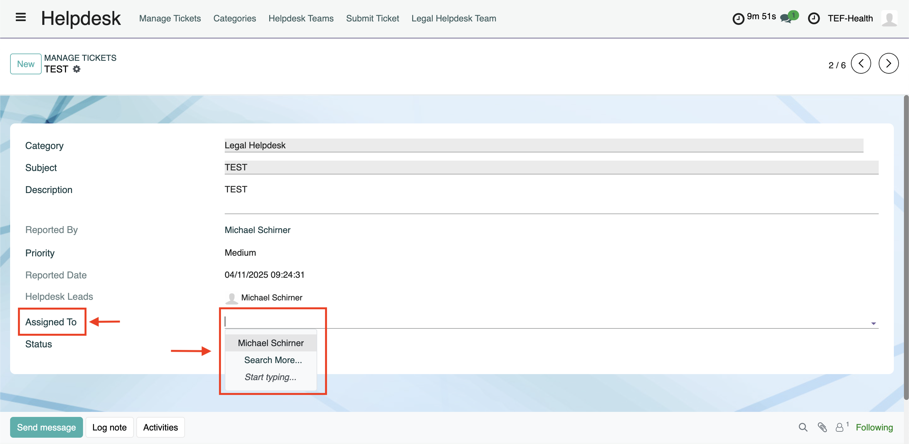
Changing the status of support request tickets
Helpdesk Staff indicate the status of a ticket: Draft, New, In Progress, Resolved, Closed.
- When a ticket is submitted, it automatically moves from Draft to New.
- When the ticket is started to be addressed, Helpdesk Staff moves it to In Progress.
- When Helpdesk Staff has sufficiently addressed the request, they indicate it as Resolved.
- If there is no further activity on the ticket, it is automatically Closed.
- Users can reopen a ticket, if they believe further assistance is needed.
- Open the ticket.
- Click on Status. Select a status from the drop-down list.
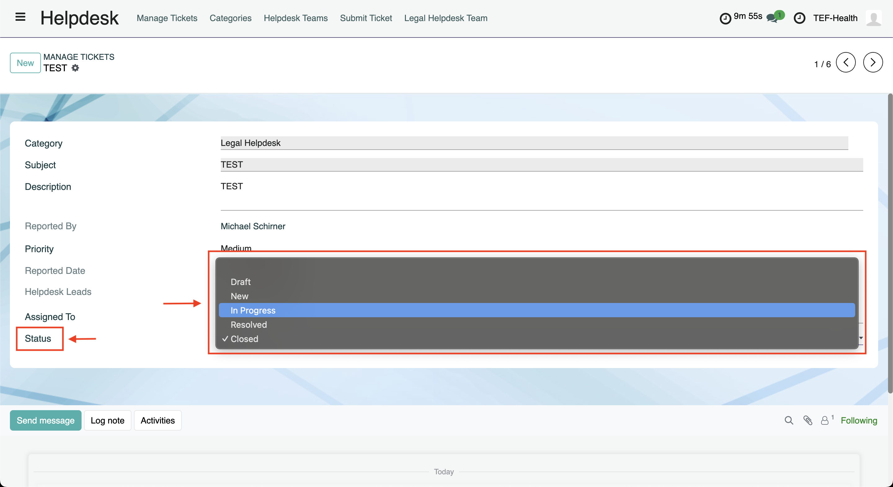
Answering support request tickets
- Open the ticket.
- Click on Send Message.
- Insert response text in the text box.
- Click on Send to send the text. Attachments can be added by clicking on the paper clip.
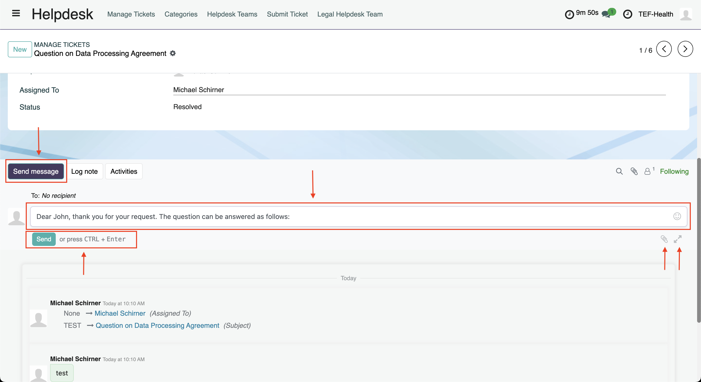
- A dedicated overlay allows to schedule the sending of the message: click on the small arrow next to Send and then on Send Later.
- The overlay also allows to save responses as template and re-use them later. Click on the three dots and then Save as Template to save a response and Insert Template to load a saved response.
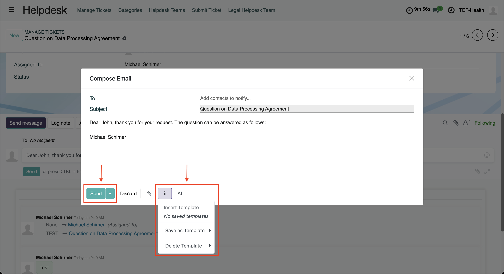
Defining Helpdesk Teams, Categories and Disclaimers
TEF-Helpdesk Leads can define Categories of Support Requests and the responsible Helpdesk Team. TEF-Helpdesk Leads can also define which Categories are visible for different User Groups when creating a ticket (for example, Service Providers can select from a different set of categories than Applicants).
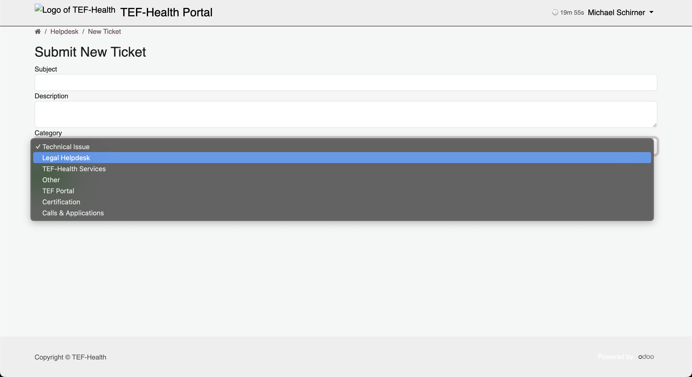
TEF-Helpdesk Leads can also define Disclaimers that are presented when selecting a particular category.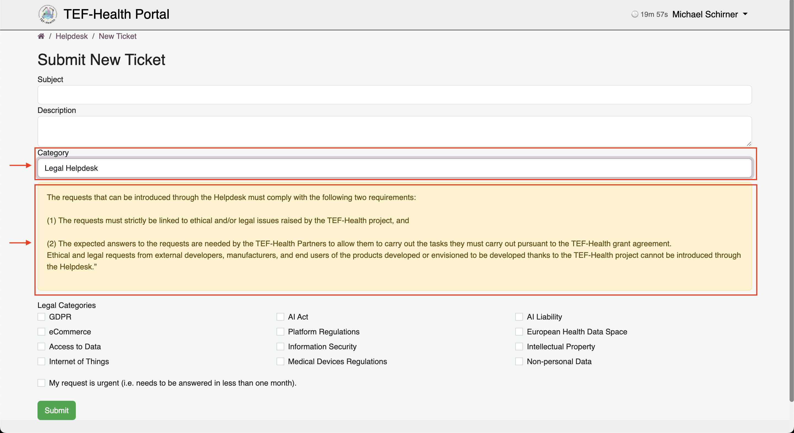
- Open the Helpdesk from the left-hand menu and then click on Categories in the top navigation bar.
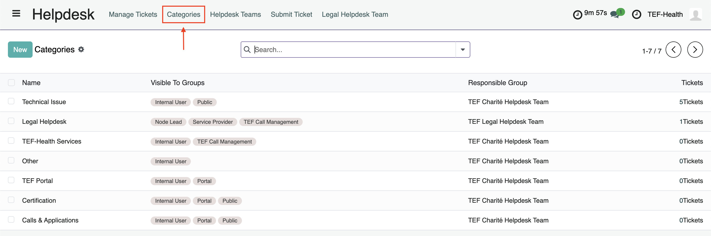
- Creat a new Category by clicking on the button New or open an existing Category by clicking on the corresponding row.
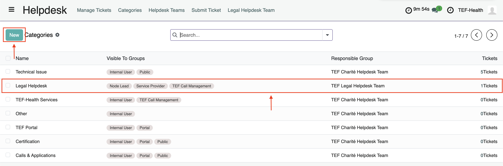
- Click into the field Disclaimer to add a Disclaimer text.
- Click on the dropdown menu at Responsible Group to add the Category to a team.
- Define the Groups to which the Category is visible by clicking on Add a line.
- Save changes by clicking on the cloud symbol at the top or discard by clicking the cross.
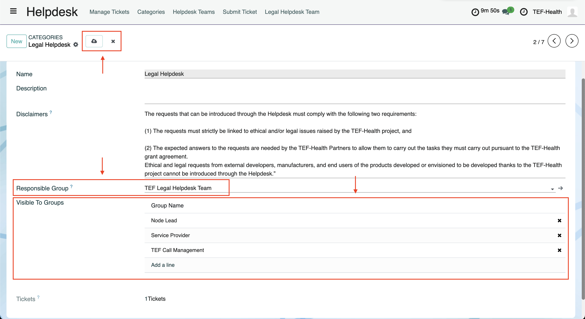